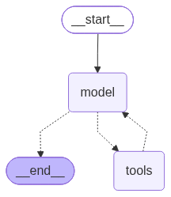
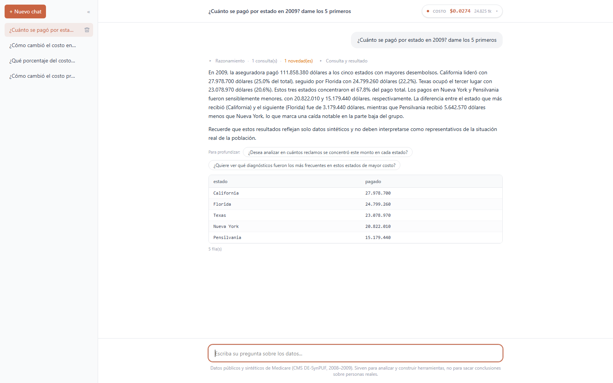

Una plataforma de analítica con IA lista para usuarios
Ricardo Robayo
IA Week · 2026 octubre
Objetivo: llevar el agente de Python que piensa a un producto: un grafo de
agentes especializados que razona, calcula en un sandbox aislado, verifica cada cifra contra la base
y guarda el historial y el costo de cada conversación, todo sobre datos públicos.
RecapitulaciónPython que piensa · 7 de octubre de 2026
Qué es, qué aprendimos y qué falta
El agente de la charla anterior, en cuatro piezas:
1
El LLM básico
¿Qué es?El cerebro: un modelo que entiende y genera texto.
AprendimosSolo no conoce nuestros datos ni la fecha de hoy, y cobra por cada token.
FaltaMedir cuánto cuesta cada pregunta y cada conversación: ya no es una llamada suelta al LLM, sino un sistema conversacional.
2
LangChain
¿Qué es?El habilitador para usar el modelo: prompts, roles y herramientas del agente.
AprendimosUn RAG de ejemplos: con consultas de muestra, el modelo replica y adapta el SQL para preguntas nuevas.
FaltaUn RAG de definiciones: explicarle el negocio para que, con pocos ejemplos, entienda cómo usar la base.
3
LangGraph
¿Qué es?El orquestador: el flujo que coordina los pasos y agentes hechos con LangChain.
AprendimosEl agente es un ciclo: decide cuántas consultas hacer y recuerda el hilo.
FaltaRepartir el trabajo entre agentes y llevar los cálculos a un sandbox aislado: cifras exactas y a salvo de una prompt injection.
4
API y front
¿Qué es?La API pone el agente en producción; el front permite verlo e interactuar.
AprendimosEl agente funciona como servicio, con un chat para usarlo.
FaltaVarios usuarios con historial, y un front propio para auditar quién pregunta, qué pregunta y cuánto cuesta: así medimos el impacto y el retorno de la inversión.
Lo que aprendimos es el motor. Lo que falta es el producto: de eso trata esta charla.
Versión 1 y dos caminosCómo perfeccionar el agente de la clase anterior
De la versión 1, dos caminos para mejorarla
Versión 1 · un agente ReAct, el de la clase anterior

El agente por defecto de LangGraph: un modelo y n herramientas. Así responde:
El modelo escribe el SQL.
Una tool lo ejecuta en solo lectura.
Con el resultado, redacta.
Repite model ⇄ tools las veces que necesita y recuerda el hilo.
Pagado hospitalario 2008. Resolvió varias acciones seguidas, pero estimó la cifra.
Límite 2
Aprende de ejemplos
✓
Una muestra de preguntasaprende a responder
✗
Definiciones de negociono aprende a razonar
Opción A · Usar Claude
Reúne el LLM; la capacidad de desarrollar skills, con el conocimiento del negocio y el mapa para usar las herramientas de Claude; un puerto MCP hacia las bases con las que se decide; y un sandbox que ejecuta, controlado, análisis, documentos y reportes HTML.
A favorRápido: lo difícil ya viene hecho y entrega piezas terminadas.
En contraTopes de uso, menos control y un MCP propio que desarrollar.
1 a 2 semanasbeta funcional (casos prácticos vistos)
1,5 a 2 mesesproducto entregable, ~95 % de las preguntas
Opción B · Construirlo nosotros
Replicamos a Claude con piezas propias: el agente en Python y el front en React.
A favorGestión 100 % nuestra y sin topes de uso: costos, seguridad, datos, auditoría.
En contraMás tiempo de desarrollo y un equipo que lo mantenga.
No sabemos construir interfaces: el vibe coding cierra esa brecha, pero hay que estudiar lo básico de frontend y backend para saber conectar cada pieza.
Rápido con Claude, o con control total construyéndolo nosotros.
Opción A · Usar ClaudeLo que trae listo, y lo que cuesta usarlo
Opción A: Claude, lo que aporta y lo que cuesta
Cómo trabaja Claude, a grandes rasgos
Definiciones
SkillsLe entregan el conocimiento del negocio y el orden en que usar cada herramienta.
En nuestro caso: el diccionario y sus trampas
MCPClaude trae el puerto; nosotros desarrollamos el MCP que conecta nuestras fuentes. Es lo único que mantenemos.
En nuestro caso: la base de reclamos
Sandbox y artefactosEjecuta el código y entrega análisis, documentos y tableros HTML que se actualizan solos y, como el chat, se comparten.
En nuestro caso: los cálculos y el informe
Requisitos
Una base de datos consolidada.
Un MCP propio en una Azure Web App desarrollada en Python.
Seguridad: el endpoint del MCP protegido con OAuth 2.1.
Una cuenta corporativa de Claude.
Limitaciones
El uso tiene tope: una ventana de 5 horas y un límite semanal.
El plan de USD 20 se queda corto para investigación profunda o uso intensivo.
Menos control fino: no decidimos cada paso ni cada chequeo, como en nuestro grafo.
Plan
Precio al mes
Uso por ventana
Pro
USD 20
la base
Max
USD 100 · USD 200
5× · 20× el de Pro
Claude: rápido y completo, con tope de uso. Nuestro grafo: más trabajo, con control y costo predecible.
Precios y límites a octubre de 2026 (anthropic.com/pricing). Anthropic no publica una cantidad fija de mensajes por ventana.
Opción B · Construirlo nosotrosbackend/agente/nodos.py · qué hace cada nodo del grafo
Opción B: un equipo de agentes y sus piezas
Supongamos esta pregunta: ¿Cómo cambió el costo promedio por reclamo hospitalario entre 2008 y 2009?
1 · Entender comprender + revisar
Qué: costo promedio por reclamo
Cómo: monto pagado ÷ reclamos
Dónde: hospitalario, 2008 y 2009
2 · Traer y calcular construir + extraer + componer
2008:USD 258,1 M en 27.656 reclamos
2009:USD 245,5 M en 25.210 reclamos
Sandbox:9.331,21 → 9.738,71
3 · Verificar y enriquecer revisar_resultado + leer + explicar
Revisa: costo por reclamo +4,4 % ✓
Contexto: reclamos −8,8 %, pagado −4,9 %
Explica: lo pagado bajó menos que los reclamos
4 · Comunicar redactar
El costo por reclamo subió 4,4 %: pasó de 9.331,21 a 9.738,71 dólares.
Es importante mencionar que esto sucede aun cuando los reclamos cayeron 8,8 % (de 27.656 a 25.210),
pero lo pagado solo se redujo 4,9 % (de USD 258,1 M a 245,5 M).
Lo que nos muestra: hay menos reclamos, pero cada uno nos cuesta más.
modelo: llama al LLM con su promptcódigo: ejecuta lo que decidió el modelosandbox: corre el cálculo del modelocamino que se elige en cada pregunta
Razonar y calcularUn caso real del agente, tal como quedó en el panel de razonamiento
El modelo razona; el sandbox calcula
Para qué sirve
Ejecuta el Python que escribe el modelo.
Calcula sobre los datos ya consultados.
Es la herramienta de ejecución de código de Claude, hecha en casa.
En qué ayuda
La cifra no se estima: se calcula.
Da el mismo resultado en cada corrida.
Cada número se puede auditar: el código queda a la vista.
Cómo usarlo
Solo las librerías necesarias: pandas, numpy, pyarrow.
Sin red, sin disco, sin credenciales; 30 s y 512 MB.
Crecer de a poco: machine learning, proyecciones.
Riesgos
Prompt injection: código malicioso que intente salir; aquí no tiene red.
Cada librería nueva es superficie nueva.
Un cálculo puede fallar: reparar lo corrige.
Pregunta: ¿Cómo cambió el costo promedio por reclamo hospitalario entre 2008 y 2009?
1 · El razonamiento
Período
2008 frente a 2009
Métrica
Costo promedio por reclamo hospitalario (monto pagado por la aseguradora)
Extracción
Una consulta, que arma el código:
SELECT "anio", SUM("monto_pagado") AS "monto_pagado_total",
COUNT(*) AS "reclamos"
FROM sabana WHERE "ambito" = 'Hospitalario'
GROUP BY "anio" ORDER BY "anio"
sin redsin discosin credenciales30 s y 512 MB como tope
Respuesta: subió de USD 9 331,21 a USD 9 738,71 (+4,4 %). Cada cifra salió de una ejecución.
El frontfrontend/ · React + Vite + TypeScript + Tailwind
El front: qué hace cada herramienta y cómo se juntan
HTML
La estructura: qué hay en la pantalla.
En nuestro front: la barra de conversaciones, el chat y la caja para escribir.
CSS
El estilo: cómo se ve.
Colores, espacios y tipografía; con Tailwind se escribe en clases cortas.
JavaScript
El comportamiento: qué pasa al hacer clic.
Enviar la pregunta, llamar a la API, borrar un chat, abrir el razonamiento.
React
Junta los tres en componentes reutilizables.
El panel de razonamiento, el medidor de costo y la tabla de resultados son componentes.
Cómo se juntan, en cada pregunta
NavegadorReact arma la pantalla con HTML, CSS y JavaScript
⇄
API · FastAPIrecibe la pregunta y devuelve respuesta, razonamiento y costo
⇄
Agente · LangGraphel grafo de la lámina anterior, en Python
⇄
Base y sandboxSQLite en solo lectura y el contenedor de cálculo
El back piensa; el front es lo que ve el negocio: sin él, nadie lo usa.
El frontEl producto funcionando · qué herramienta hace cada parte
Nuestro front, parte por parte

1234567
1
ConversacionesReactJS la lista del historial; abrir o borrar un chat.
2
Medidor de costoReactJS cuánto costó la conversación; lo pide a la API.
3
RazonamientoReactJS se abre al clic: el SQL, los filtros y el cálculo.
4
RespuestaHTML llega como HTML desde el agente y se limpia antes de mostrarse.
5
Para profundizarJS al tocar una sugerencia, se envía como pregunta nueva.
6
Tabla de resultadosReact un componente que formatea las cifras.
7
Caja de preguntaHTMLJS el campo de texto y el envío a /api/chat.
Y todo lo que se ve —colores, espacios, tipografía— es CSS escrito con Tailwind.
HTML pone las piezas, CSS las viste, JavaScript las mueve y React las organiza.
Del agente al producto: lo que hace falta
Parte técnica
Estudio
Lo básico de HTML, CSS, JavaScript y React: lo suficiente para leer y entender lo que se construye.
Análisis
Entender cómo viaja una pregunta: del front a la API, de la API al agente y de vuelta.
Investigación
Probar, medir y comparar: Claude o construirlo nosotros, con costos y resultados reales.
Tiempo de aprendizaje
Semanas de práctica hasta que conectar el front con el back se vuelva natural.
Parte de negocio: medir el retorno
Horas ahorradas
Cuánto tiempo de análisis deja de hacerse a mano, frente a lo que cuesta operar el agente.
Análisis realizados
Cuántas preguntas se responden al mes, y cuántas antes no se alcanzaban a responder.
Hallazgos monetarios
Cuánto dinero señalan los hallazgos: costos que suben, fugas, oportunidades.
Estrategias derivadas
Cuántas decisiones o estrategias nacen de un análisis del agente.
La brecha la cierra el vibe coding: describimos lo que necesitamos, la IA escribe el código, y
nosotros lo entendemos, lo revisamos y lo conectamos. Así llegamos a un front utilizable en el día a día,
con historial, costos y el razonamiento a la vista.


 React · HTML · CSS · JavaScript
React · HTML · CSS · JavaScript